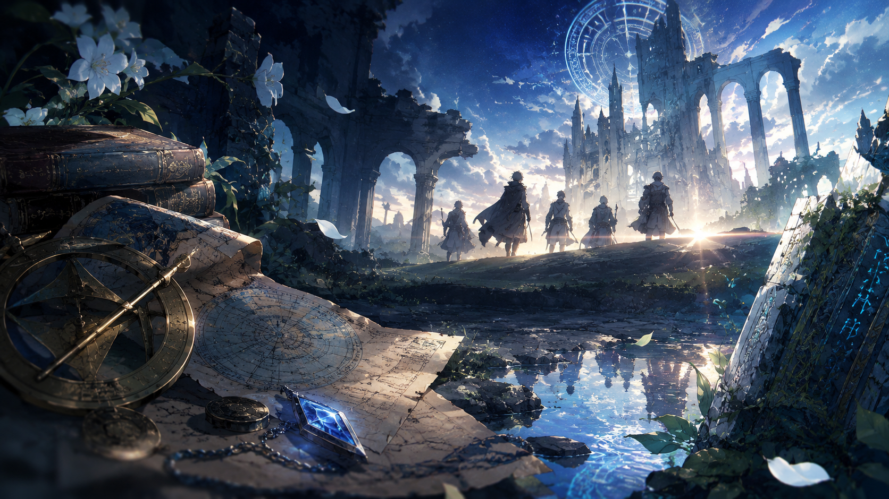

WORLD
夜に侵食される世界
少しずつ短くなっていく昼と、世界を覆い尽くそうとする夜。変わりゆく空の下で、人々はそれぞれの日常を送りながら、世界に起きている異変と向き合っている。
古代の遺跡や残された記録を手がかりに、世界の各地を巡る旅が始まる。


LOST HISTORY
失われた歴史
各地に残された古代遺跡、用途の分からない遺物、そして時の流れに埋もれた記録。断片的な手がかりをたどることで、今の世界につながる失われた歴史が少しずつ姿を現す。
STORY
消えた調査隊
古代遺跡や遺物の調査に携わるエリオットは、ある調査中に起きた失踪事件をきっかけに、世界を覆いつつある異変の調査へと踏み出していく。残された手がかりを追う旅は、やがて仲間たちを世界の深い謎へと導いていく。